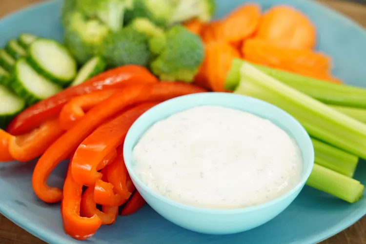

Ranch Dressing

Description
Ranch is an American salad dressing. It traditionally features a buttermilk base, but some recipes (like this one) call for a combination of sour cream and mayonnaise instead. Ranch is usually seasoned with a savory blend of herbs and spices, such as garlic powder and dill.
Ingredients
- 1 cup mayonnaise
- 1/2 cup sour cream
- 1/2 teaspoon dried chives
- 1/2 teaspoon dried parsley
- 1/2 teaspoon dried dill weed
- 1/4 teaspoon garlic powder
- 1/4 teaspoon onion powder
- 1/8 teaspoon salt
- 1/8 teaspoon ground black pepper
Steps
-
Gather all ingredients.
-
Whisk mayonnaise, sour cream, chives, parsley, dill, garlic powder, onion powder, salt, and pepper together in a large bowl until well-combined.
-
Cover and refrigerate for 30 minutes before serving.